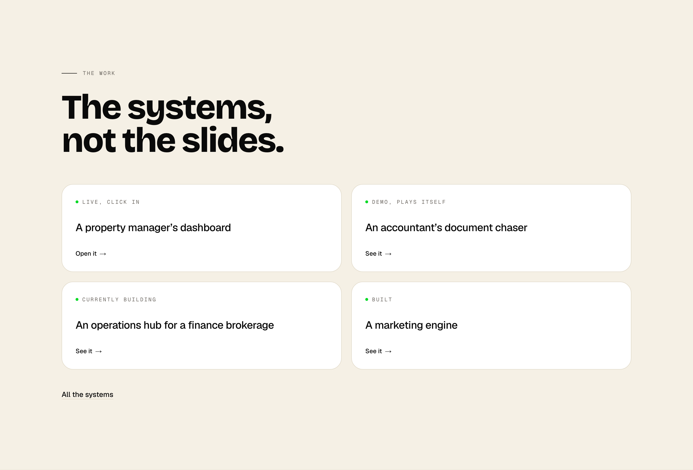
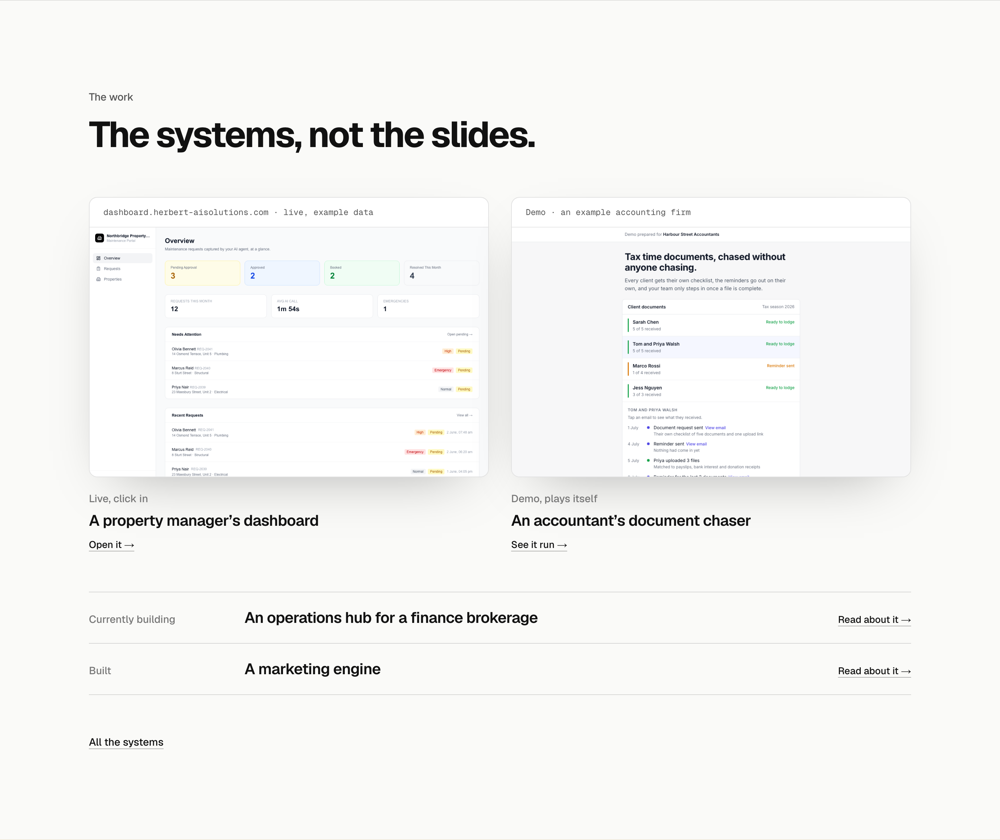
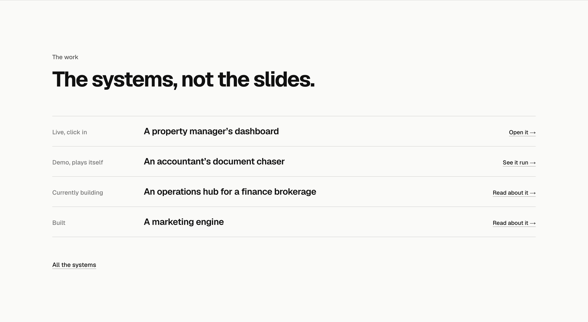
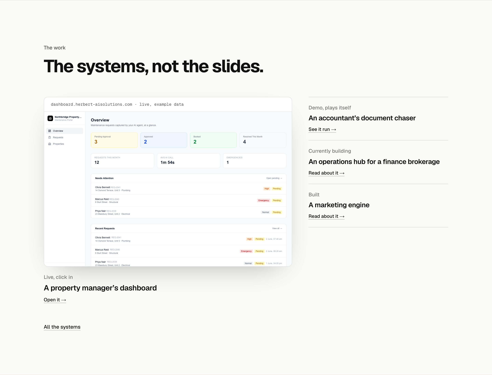

Homepage: The work
The section under How it works, each option drawn in place on the real homepage at 1440 wide and shown whole. The heading and the “All the systems” link are the same in all three. The two screens are the ones the /work page already uses; the brokerage hub is never shown as a picture and the marketing engine is an internal tool, so both stay as words.
TodayThe May register: cream ground, Bricolage heading, four white cards with a green dot on each tag, 977px. For comparison, not an option.

A. Two screens, two linesThe property dashboard and the accountant demo as real screens side by side, each with what it is and a link; the brokerage hub and the marketing engine as plain lines under them, since neither can be shown as a picture. 1210px. Recommended: this is the section that proves the boards above are real, and a screen proves it faster than a name.

B. Four systems, set plainThe four as a ruled list in the style you picked for How it works: what each is, its name, a link. No pictures. The calmest, and the shortest at 788px, but nothing on it shows the software.

C. The live one largeThe dashboard a visitor can click into, large on the left, with the other three listed beside it. One picture, the one that is live. 1099px.
